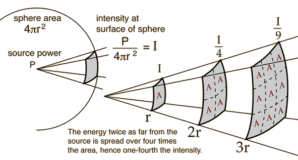
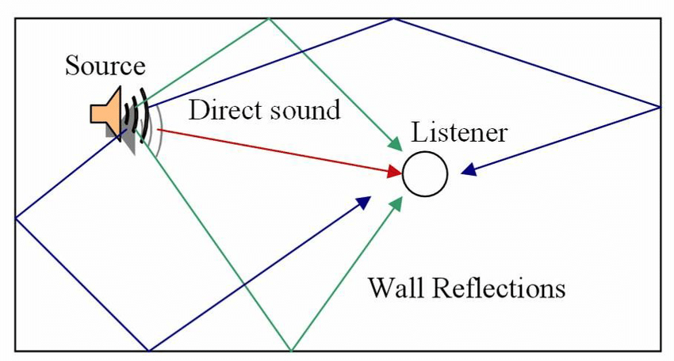
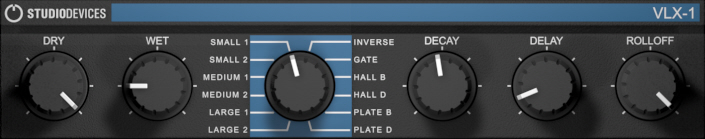
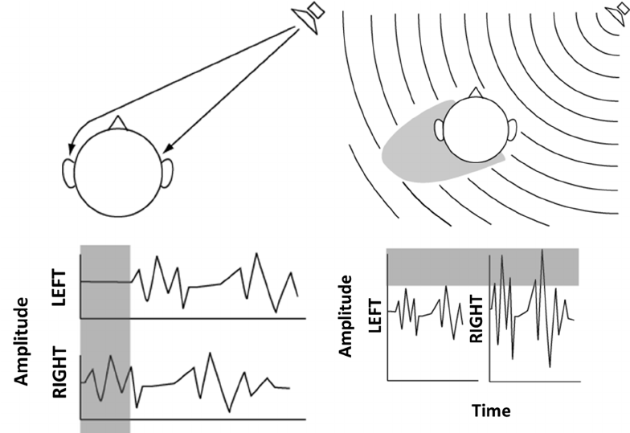

Localizing a Sound Source
When we hear a sound, how do we know where it's coming from? How do we know whether its near to us or far from us? How do we know in which direction the sound source is? And how do we get a sense, solely from sound, of the kind of space we're in? This human process of determining (or guessing) where a sound is is called localization.
Even when we listen to recorded or synthesized sound, and know that the sound is coming from loudspeakers or headphones, we still can have a sense of a sound's location in the virtual (imagined) space in which the sound seems to be occurring. This, too, is a form of localization. In a concert recording or studio recording of music, or in 3D game, the sound engineer may use digital audio processing techniques to create a particular localization effect. This, too, is sometimes referred to as "localization" of the sound, but to avoid confusion, we'll use localization to refer only to the human listener's attempt to identify the location of the sound source (virtual or real), and we'll use the term spatialization to refer to the technical process of giving sound a sense of existing in a virtual space, when it is actually being produced by loudspeakers or headphones.
Distance, and the Inverse Square Law
We gauge how far a sound source is from us mostly by how loud it is, relative to how loud we know it to be from prior experience. That is, we all have a large repertoire of sounds we have heard in different situations in our lives, and for which we have unconsciously noted the intensity relative to their distance from us. For example, we have all heard a basketball being bounced, both close-up (by ourselves) and far away (by someone else at the other end of the court). So, we can compare a current sound to our prior experiences to guess how far the sound is from us. And we can also use changes in a sound's loudness (intensity) to surmise that the sound has changed its distance from us.
A given sound has an amount of power, which is defined as the amount of energy transferred from the source (in all directions) per unit of time (P = E/t). The intensity of a sound is its power measured over a certain area (I = P/a). Our tympanic membrane (a.k.a. our eardrum) and a microphone are both devices that measure sound intensity. When a sound arrives at our eardrum or at the diaphragm of a microphone, either of which has a certain surface area, the power in that area (i.e. the intensity) is detected. However, the intensity of a sound, as measured by an eardrum or a microphone, will differ depending on the distance from the sound's source, because the sound is being emitted from the source in all directions. If you think of the sound energy as radiating outward from the source in a spherical pattern, and you bear in mind that the surface of a sphere is proportional to the square of its radius (the surface area of a sphere is equal to 4πr2), you can understand that the intensity of a sound as measured in a given surface area is inversely proportional to the square of the distance of the point of measurement from the sound source. This principle is known as the inverse square law: intensity is inversely proportional to the square of the distance from the source (I ∝ 1/d2).

Inverse square law
Amplitude and Intensity
Our subjective sense of a sound's "loudness" is not the same as its intensity, but is generally roughly proportional to it. But what does that mean in terms of the amplitude factor we'll use to alter a sound's intensity in digital audio? As defined in physics, the intensity of a wave is proportional to the square of its amplitude (A2 ∝ I). So that means that if we want to emulate the effect of a sound being twice as far away, (1/4 the intensity), we would need to multiply the amplitude by one-half. Indeed, based on what we know about the relationship between distance and intensity (the inverse square law, I ∝ 1/d2), we can see that the relationship between distance and amplitude is simply A ∝ 1/d; amplitude is inversely proportional to distance (see Max example).
Reflections and Reverberation
The preceding discussion of the inverse square law assumes an idealized open space in which the sound is free to radiate in all directions from the source with no reflections. In reality, there is always at least the ground, and usually some walls, off of which the sound reflects, complicating the idealized spherical model somewhat. Some sound goes directly to the listener, and some strikes the floor, ceiling, and walls. When sound strikes a surface, some of its energy is absorbed by the surface (or transmitted through the surface) and some of it is reflected. The sound that's reflected (after being diminished somewhat by the absorption) may also reach the listener, as if it came from the surface itself (or a virtual source beyond the surface). So, in a room, we're actually hearing a combination of the direct sound and the (usually lesser) reflected sound.
Direct and reflected sound energy
These reflections (and reflections of reflections) travel a longer distance than the direct sound, so they're very slightly delayed relative to the direct sound, and they are so numerous and quick that they blend together, causing a slight amplification and prolongation of the sound, known as reverberation. The balance between direct sound and reverberated sound is another cue that helps the listener have an idea of the proximity of the sound source. For example, when someone whispers into your ear, you hear almost exclusively direct sound, whereas when they talk to you from across the room you hear much more reflected sound in addition to the direct sound. So, in addition to intensity, the balance of direct ("dry") sound and reverberated ("wet") sound also give a sense of space. For that reason, most digital audio reverb effects have a way of controlling the mix of dry and wet versions of a source sound.
"Dry/Wet" controls in the user interface
High-Frequency Rolloff
In addition to sound absorption and reflection, another physical phenomenon that occurs when sound waves encounter a physical object is diffraction, which is the change of direction that occurs when sound passes through an opening or around an object. Any less-than-total barrier, be it a partial wall or any other object, leaves space for some sound to get past it, and the sound continues to radiate outward from that opening, effectively seeming to bend around the obstacle. A sound's wavelength is inversely proportional to its frequency (f ∝ 1/λ), and for that reason, lower-frequency waves have a greater wavelength than higher-frequency waves. Thus, low frequencies tend to diffract more readily than high-frequencies, and for that reason, a sound barrier will tend to serve as a lowpass filter, muffling the sound slightly.
For many absorptive surfaces, high frequencies likewise tend to get absorbed more readily than low frequencies. So, reflective surfaces might have a lowpass filter effect, as well. And even the air itself absorbs sound a little, and tends to absorb higher frequencies more than lower ones. So, the greater the distance of a sound source from the listener, the greater the lowpass filtering effect of air absorption. All of those factors—diffraction, absorption during reflection, and air absorption—lead to a common reduction of high frequencies as sounds get farther away, so high-frequency rolloff (lowpass filtering) is also an effective method of controlling the impression of distance of a sound in a virtual space.
Angle
Another important factor for sound localization, equally important as distance, is the angle of the sound source relative to the listener's orientation. When discussing angles in 3-dimensional space, one can refer to altitude (known as the elevation angle) and direction (known as the azimuth angle). We don't often hear sounds that come from radically different heights, whereas we often hear sounds coming from different directions. So, the azimuth angle is much more important to us in sound localization.
We're able to localize a sound's direction because we have two ears. If a sound is directly in front of us, it arrives at our two ears at exactly the same time and with equal intensity. However, if the sound is at all off of that central axis, it will arrive at our ears at slightly different times and with slightly different intensities. We're highly sensitive to these very subtle differences, known as the interaural time difference (ITD) and the interaural intensity difference (IID), and we use them to determine the azimuth angle of a sound source. As depicted below, an off-axis sound takes longer to get to one ear than the other, and has to diffract around the head with a related slight loss of intensity and high-frequency content. The ITD is commonly very slight, even less than a millisecond, but is enough to give us a sense of azimuth angle. This effect is known as the precedence effect or the Haas effect. Helmut Haas demonstrated that the precedence effect (ITD) can overcome IID; we base our sense of a sound's direction on the first, direct version of a sound even if a reflected version of the sound comes from a different direction with somewhat greater amplitude than the direct sound. However, if the IID is great enough, it will be more salient than the ITD.
Off-axis sound source causes ITD and IID
Audio engineers will sometimes exploit the Haas effect by delaying a sound going to one of two stereo speakers, to give the sound a sense of directionality in the stereo field. Delaying the sound to one channel by several milliseconds—more than ordinary ITD but not so much as to be heard as a discrete echo—can give a sound a more "spacious" feel, perhaps because the listener becomes slightly confused about its virtual direction. An audio engineer might also create a difference in the intensity of the sound going to the two stereo channels, so as to give the listener an impression of significant IID. Either or both of those techniques is commonly used to give a sense of space in a stereo recording.
Stereo
Stereophonic recording and playback, the use of two separate channels of sound so that the listener's two ears receive different signals, was invented in the 1930s and has been the norm in recorded music since the 1960s. As notes above, listeners derive as sense of space from cues such as loudness, reverberation, filtering, interaural time difference and interaural intensity difference.
The perceived azimuth angle of a sound in virtual space can be influenced by the balance of intensity between the two speakers. Most audio mixers and most DAWs provide a knob or a slider for "panning" the intensity of the sound between the two channels.
The following examples from the Max Cookbook teach about techniques for intensity-based stereo panning. The most favored of those methods is constant-power panning (a.k.a. constant-intensity panning); one of the examples shows how that method can be encapsulated as a very useful pan~ abstraction for easy and effective intensity-based panning of any sound in Max.
- Linear amplitude panning
- Constant power panning using square root of intensity
- Constant power panning using table lookup
- Constant-intensity panning subpatch
- Rhythmic automated panning
Beyond Stereo
Many other systems have been devised, using four, six, eight, or more speakers, to create a more realistic 2D or 3D sound spatialization that goes beyond stereo. These techniques include quadraphonic spatialization, 5.1 cinema spatialization (common in DVDs), 7.1 cinema spatialization (common in theaters and Blu-ray discs), Atmos spatialization (in a mnority of theaters), head-related transfer functions (HRTF) for binaural headphone listening, and other advanced mathematical techniques such as Ambisonics and wave field synthesis (WFS).